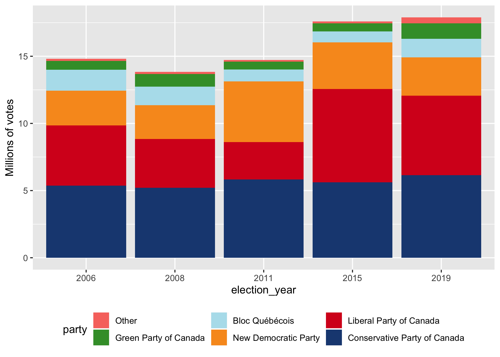
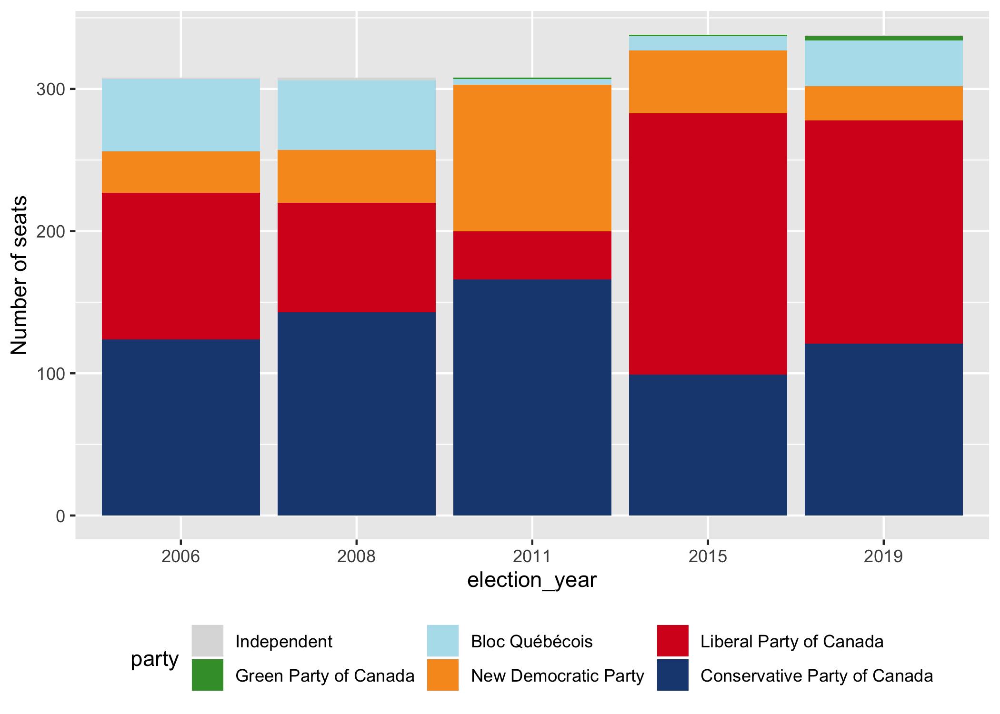
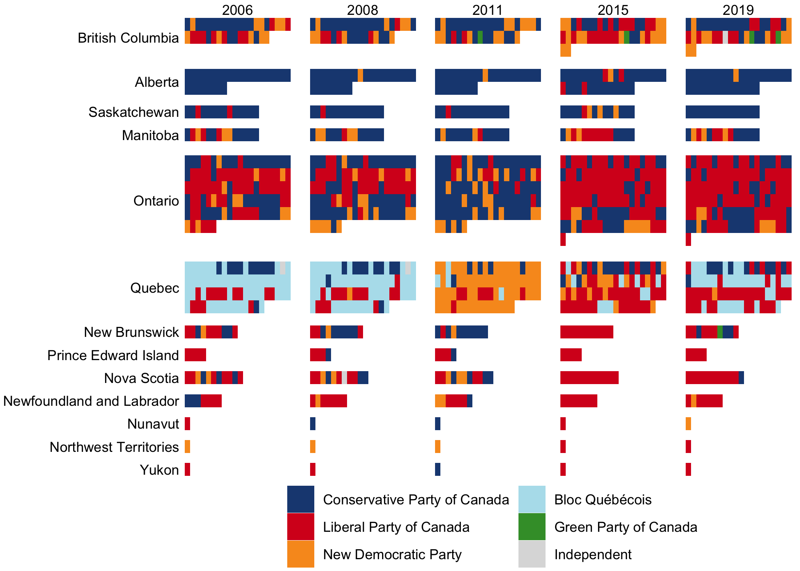
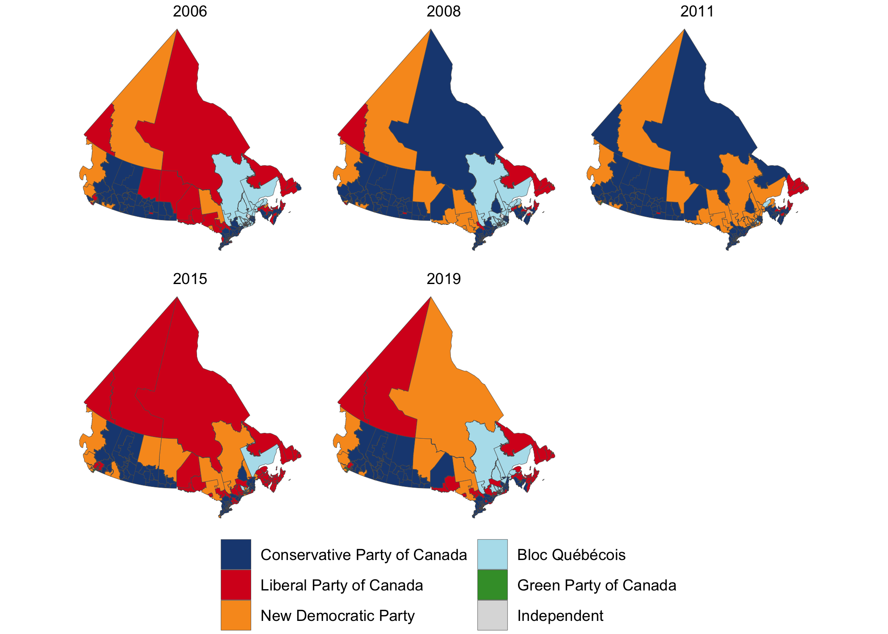

The goal of electionca is to provide Canadian (general) election data in an easily accessible format for R users. It is based on the Library of Parliament’s ParlInfo site, but also includes geography for elections since 2003 (2003, 2013 and 2015). Approximate geography is derived for historical ridings based on riding associations noted by the Library of Parliament.
Installation
You can install the development version from GitHub with:
If you can load the package, you’re all set!
Example
This package contains geographic information about ridings (ridings), results from each riding for each general election (results), and low-resolution boundaries, where these are known (2006-present). It contains convenience functions to plot election results in bar, cartogram, and map format:




The easiest way to access the data in this package is through the election_results() function, which modifies the raw data slightly to provide the data that you probably want to work with:
election_results()
#> # A tibble: 42,096 x 11
#> election_date riding name party votes result person_id province
#> <date> <chr> <chr> <chr> <dbl> <chr> <dbl> <fct>
#> 1 1867-08-07 NB/18… John… Libe… 778 Elect… 15128 New Bru…
#> 2 1867-08-07 NB/18… Henr… Unkn… 714 Defea… NA New Bru…
#> 3 1867-08-07 NB/18… Char… Libe… 0 Elect… 16576 New Bru…
#> 4 1867-08-07 NB/18… John… Libe… 1214 Elect… 13379 New Bru…
#> 5 1867-08-07 NB/18… Robe… Unkn… 918 Defea… NA New Bru…
#> 6 1867-08-07 NB/18… Timo… Libe… 1061 Elect… 14587 New Bru…
#> 7 1867-08-07 NB/18… John… Unkn… 671 Defea… NA New Bru…
#> 8 1867-08-07 NB/18… Augu… Libe… 876 Elect… 4768 New Bru…
#> 9 1867-08-07 NB/18… NA D… Unkn… 757 Defea… NA New Bru…
#> 10 1867-08-07 NB/18… NA M… Unkn… 485 Defea… NA New Bru…
#> # … with 42,086 more rows, and 3 more variables: riding_label <chr>,
#> # riding_id <dbl>, election_year <dbl>If you’re looking to do a more comprehensive analysis, you can access the raw data using results, ridings, and boundaries.
results
#> # A tibble: 42,096 x 7
#> election_date riding name party votes result person_id
#> <date> <chr> <chr> <chr> <dbl> <chr> <dbl>
#> 1 1867-08-07 NB/1867/al… John WALLA… Liberal Pa… 778 Elect… 15128
#> 2 1867-08-07 NB/1867/al… Henry J. S… Unknown 714 Defea… NA
#> 3 1867-08-07 NB/1867/ca… Charles CO… Liberal Pa… 0 Elect… 16576
#> 4 1867-08-07 NB/1867/ch… John BOLTON Liberal Pa… 1214 Elect… 13379
#> 5 1867-08-07 NB/1867/ch… Robert THO… Unknown 918 Defea… NA
#> 6 1867-08-07 NB/1867/gl… Timothy Wa… Liberal Pa… 1061 Elect… 14587
#> 7 1867-08-07 NB/1867/gl… John MEHAN Unknown 671 Defea… NA
#> 8 1867-08-07 NB/1867/ke… Auguste RE… Liberal Pa… 876 Elect… 4768
#> 9 1867-08-07 NB/1867/ke… NA DES BRI… Unknown 757 Defea… NA
#> 10 1867-08-07 NB/1867/ke… NA MCINERN… Unknown 485 Defea… NA
#> # … with 42,086 more rows
ridings
#> # A tibble: 1,493 x 8
#> riding riding_label year_start year_end riding_id province lon lat
#> <chr> <chr> <dbl> <dbl> <dbl> <chr> <dbl> <dbl>
#> 1 AB/1904… Calgary 1904 1908 1371 Alberta -113. 51.7
#> 2 AB/1907… Medicine Hat 1907 2015 5224 Alberta -111. 50.0
#> 3 AB/1908… Edmonton 1908 1917 2704 Alberta -114. 53.6
#> 4 AB/1908… Macleod 1908 1968 5037 Alberta -112. 50.9
#> 5 AB/1908… Red Deer 1908 2015 7064 Alberta -114. 52.1
#> 6 AB/1908… Strathcona 1908 1925 8822 Alberta -114. 52.8
#> 7 AB/1908… Victoria 1908 1925 9615 Alberta -114. 52.8
#> 8 AB/1917… Battle River 1917 1953 808 Alberta -114. 52.1
#> 9 AB/1917… Bow River 1917 1968 1119 Alberta -112. 51.3
#> 10 AB/1917… Calgary West 1917 1953 1395 Alberta -114. 52.1
#> # … with 1,483 more rows
boundaries
#> Simple feature collection with 1600 features and 2 fields
#> geometry type: GEOMETRY
#> dimension: XY
#> bbox: xmin: -2371619 ymin: -724687.7 xmax: 3012991 ymax: 4654012
#> epsg (SRID): 3978
#> proj4string: +proj=lcc +lat_1=49 +lat_2=77 +lat_0=49 +lon_0=-95 +x_0=0 +y_0=0 +ellps=GRS80 +towgs84=0,0,0,0,0,0,0 +units=m +no_defs
#> # A tibble: 1,600 x 3
#> election_date riding boundary
#> <date> <chr> <POLYGON [m]>
#> 1 2006-01-23 AB/1907/medici… ((-1173009 394195.8, -1172396 393674.9, -…
#> 2 2006-01-23 AB/1908/red_de… ((-1282197 563271.4, -1279521 562433.7, -…
#> 3 2006-01-23 AB/1925/peace_… ((-1032020 1302682, -1098867 1085578, -11…
#> 4 2006-01-23 AB/1925/wetask… ((-1278147 676705, -1278199 676488.1, -12…
#> 5 2006-01-23 AB/1953/edmont… ((-1191073 673934.7, -1190621 674150.3, -…
#> 6 2006-01-23 AB/1968/crowfo… ((-1153444 636376.6, -1153873 634881.6, -…
#> 7 2006-01-23 AB/1979/calgar… ((-1313621 434403.1, -1311302 431518.2, -…
#> 8 2006-01-23 AB/1979/yellow… ((-1474371 894567.9, -1461911 889687.5, -…
#> 9 2006-01-23 AB/1988/calgar… ((-1296230 423767.1, -1296416 423176, -13…
#> 10 2006-01-23 AB/1988/calgar… ((-1305123 411846.9, -1305024 411769.9, -…
#> # … with 1,590 more rowsFor examples of how to use the raw data to create the plots returned by plot_election_map() and plot_election(), see vignette("plot_election", package = "electionca").